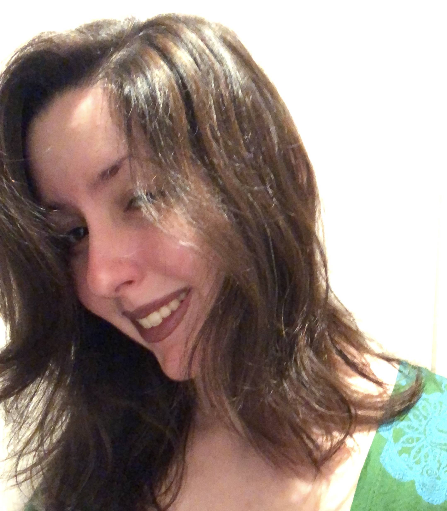

Mi nombre es María José Díaz Delgado
Soy venezolana, estudio matematicas industriales mención sistemas y computación en la Universidad Metropolitana
Metas a corto plazo:
Culminar mis estudios universitarios con el objetivo de aplicar mis estudios a mi meta de animación 3D
Aprender el lenguaje de programación de Maya mel (para el programa Maya)
Metas a largo plazo:
La realización de animaciones profesionales aplicando los conceptos que aprenda en carrera y en mis cursos de animación
Ser profesional del Modelado 3D orgánico
Me gusta:
El modelado 3D, la escultura (tanto digital como en físico), las matematicas y el dibujo
Ver películas y series que me inspiran
Me encanta la ciencia y el arte en general